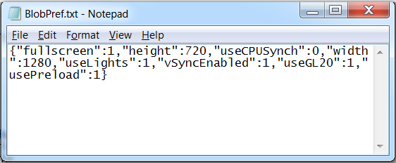

Frequently Asked Questions
- How do I modify my game preferences?
- How do I prevent the game from crashing during the loading screen?
- How do I make the game run faster?
- How do I make the game run slower?
How do I modify my game preferences?
Windows:
Click the Start button and enter %userprofile%/.BlobGame/BlobPref.txt into the search box.

Change the value to 0 to disable a feature, 1 to enable, or set an interger value for width and height. Remember to save after any changes. You can return to the default values by deleting this file and running the game.

How do I prevent the game from crashing during the loading screen?
Set the usePreload property to 0. This may cause the game to pause briefly when transitioning between levels.
How do I make the game run faster?
Check if your computer has both an integrated graphics card and a dedicated graphics card. Make sure that your system is using the dedicated card for Blob Game.
Also try setting fullscreen to 0, playing in a smaller window, and/or setting useLights to 0.
How do I make the game run slower?
Some users have noticed that having vertical synchronization enabled causes their game to run at an abnormally high framerate. Disable it by setting vSyncEnabled to 0.